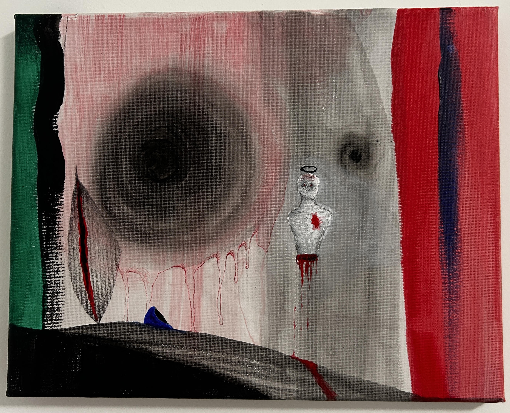

L'opera presenta una forte carica emotiva e si presta a una lettura psicologica, esistenziale e drammatica. Gli elementi astratti e figurativi cooperano per mettere in scena temi legati al dolore, alla frammentazione dell'identità e alla ricerca di trascendenza. Il quadro può essere letto come la mappa visiva di uno stato di crisi interiore. Racconta la transizione tra il tentativo di rimanere integri (il busto che cerca la sua sacralità con l'aureola) e la forza distruttiva del trauma (il vortice, le ferite e le colature di sangue). È un'espressione catartica in cui l'artista proietta sulla tela un dolore che altrimenti non potrebbe trovare voce.